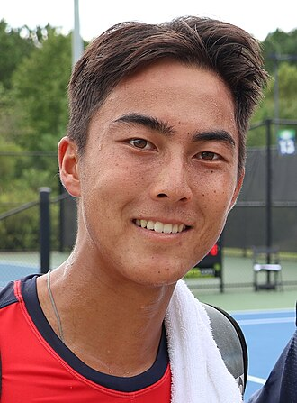
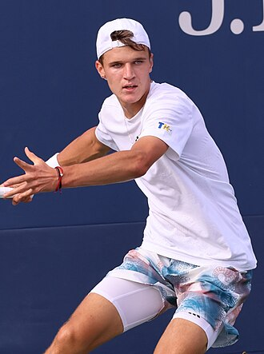

Rinky Hijikata vs Jakub Mensik

Rinky Hijikata
#95 · Forma 6–4
VS
Cincinnati Open - Cincinnati
ATP Masters 1000 · Hard
ATP Masters 1000 · Hard

Jakub Mensik
#16 · Forma 6–4
3.9224% mercado
1.2576% mercado
🔵
Alinhamento forte
Mercado e indicadores apontam para Jakub Mensik; a concentração dos indicadores é forte. A odd merece acompanhamento, mas o índice ainda não é uma probabilidade calibrada nem permite calcular uma odd justa.
Leitura do mercado
Mercado e indicadores
Rinky HijikataMercadoJakub Mensik
24%
76%
Rinky HijikataIndicadores · peso relativoJakub Mensik
25/100
75/100
Mercado observado
🔵Moneyline Jakub Mensikmercado e indicadores concordam com intensidade forte; acompanhar o preço, sem inferir odd justa
Jakub Mensik superior no ranking (#95 vs #16). Rinky Hijikata fecha 83% dos jogos após ganhar o 1º set.
O jogo num relance
Rinky HijikataJakub Mensik
#95
Ranking
#16
60%
Forma recente
60%
43%
Em Hard
64%
5
Carga | sets 7d
5
72%
1st servico ganho
70%
55%
Sets decisivos
61%
Chaves do confronto
velocidade do piso
▲ Rinky Hijikata
ranking
▲ Jakub Mensik
tie-break
▲ Jakub Mensik
Mapa de Forças (18)comparação visual de todos os fatores
Confronto direto (H2H)
Sem confrontos diretos entre os dois jogadores.
Forma Recente | Últimos 10
Rinky Hijikata
WWLLLLWWWW
Jakub Mensik
WLWWWLWLWL
Forma ajustada ao mercado
Resultados históricos comparados com as odds disponíveis
Rinky Hijikata
4 vitórias reais vs 3.51 esperadas (+0.49) · n=8 · ranking médio dos adversários #75.39 · n=31
Jakub Mensik
1 vitórias reais vs 1.32 esperadas (-0.32) · n=2 · ranking médio dos adversários #84.57 · n=54
Serviço / Resposta
Hijikata
vantagem
Mensik
1º serviço ganho
72.0%
+2.0 Hijikata
70.0%
BP salvos
57.0%
+3.0 Mensik
60.0%
BP convertidos
33.0%
+6.0 Hijikata
27.0%
Pressão de serviço e resposta
Rinky Hijikata · n=19 | Jakub Mensik · n=32
1.º serviço ganho
72.0%
Rinky Hijikata
70.0%
2.º serviço ganho
44.0%
Jakub Mensik
50.0%
1.º serviço permitido ao adversário
25.0%
Jakub Mensik
21.0%
2.º serviço permitido ao adversário
44.0%
Rinky Hijikata
49.0%
Carga (7 dias)
2 jogos
5 sets · 1d descanso
2 jogos
5 sets · 1d descanso
Leitura
Mercado e indicadores alinhados. A intensidade interna ajuda a priorizar a observação, mas não demonstra valor nem produz uma odd justa.
Créditos das fotografias
Rinky Hijikata: Hameltion, CC BY-SA 4.0; miniatura/enquadramento adaptado
Jakub Mensik: Hameltion, CC BY-SA 4.0; miniatura/enquadramento adaptado
{kind=link}
Jakub Mensik: Hameltion, CC BY-SA 4.0; miniatura/enquadramento adaptado
{kind=link}
Gerado em 17/08/2026 · Análise informativa, não recomendação de aposta.